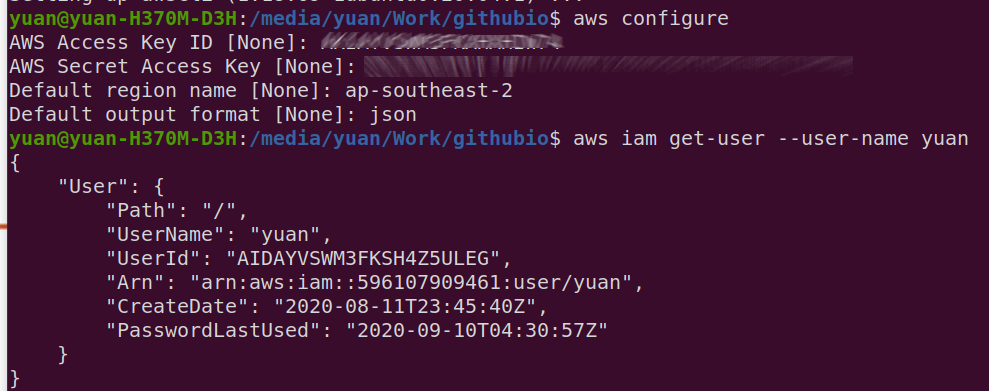

AWS Solutions Architect Associate
Part One: Pluralsight Course: Architecting for Reliability on AWS
AWS SAA C02 exam will include 4 topic
- Resilience
- Performance
- Security
- Cost-Optimization
Availability
Resiliency: The ability of an application to avoid and recover from failure.
Availability: The percentage of time that an application is performing as expected.
The availability of a single EC2 instance is 90%
The availability of an ELB(Elastic Load Balancer) and EFS(Elastic File System) is 99.99%
The availability of a RDS(Relational DataBase System) multi-AZ(multi-Availability Zone) is 99.95%
The availability of a Lambda is 99.95%
The availability of a S3 is 99.9%
The availability of a DynamoDB with Global Tables is 99.999%
Loose Coupling
One component doesn't depend on a specific component (e.g. URL points to ELB, not a specific EC2), one-to-many relationship
is EFS a single point of failure?
No, Elastic services are always composed of redundant components, they just hide it. Elastic services are always loosely coupled with other services like EC2.
Loose Coupling helps Performance: If our application's performance is low and we want to upgrade our EC2 instances, because they are loose coupled, we can upgrade EC2 instances one by one and our application will still be available, ELB will just route traffic to other instances.
Performance and Availability are linked.
Simple Queue Service
The concept of Loose Coupling can be applied to the application level too. For example, we have a video processing application, we can create two components for this application, the web interface part and the video processing part. Users go to the webpage and submit a request of a video with differnt options, and video processing part gets the request and start processing.
But because processing videos take much more time than sending requests. We need a Message Queue Service to save all the requests in order. Simple Queue Service(SQS) is one option with high availability.
Elastic Container Service
Container helps you to deploy web serices easier. Build an image of your container, deploy the image to an instance, and launch the containser in the image. E.g. Docker
You can have multiple containers in one instance, so it is like you are running multiple web services for the price of one instance. Also, if one container is down, the other containers on that instance will still be running.
Trusted Advisor
Where you can found the number of limits for all services on AWS.
Section One Summary
Availability is not cheap, we need to found the balance between availability and cost. We can achieve high availability use Redundancy and Loose Coupling
The Simple Queue Service can act as a go-between for loosely coupled services. 1. Sending service places message in a queue. 2. Receiving service polls the queue for new messages. E.g. Online voting service
The Elastic Container Service deploys microservices using Docker containers, can improve availability by running multiple containers on a single instance.
AWS Budget
In the Billing section, you can create an AWS Budget and setup an email alert, AWS will send you an email when the budget amount has been reached. There are more options.
AWS IAM
AWS has two account types, Root User account and IAM account. We can setup a password policy for AWS accounts.
AWS provides MFA for Root User account in case someone else knows your AWS account credentials.
You can create IAM accounts and Groups and assign Policies to Users or Groups, IAM users will use Root account ID or Alias and their account details to login.
CloudTrail: where AWS logs all events such as: user login, user create new resources, user attach policy to its account etc...
Configure AWS account using AWS CLI. This command can also be used to change default AWS credentials in .aws folder.
aws configure
TLS Certificate
TLS(Transport Layer Security): Make sure messages being transferred between Load Balancer and Clients are secure.
ACM(Amazon Certificate Manager): we ask ACM to issue us a TLS certificate
Route 53: when you purchase a domain, you need to config the DNS records, you can do this in the service where you purchased the domain (e.g. GoDaddy) or in Route 53.
Note: Once your TLS certificate has been issued, you still can't visit your website via https, you have to link your TLS certificate to other AWS services like CloudFront or ELB
VPC networks
AWS managers underlying VPC infrastructrue and is responsible for reliability of VPC network components. You don't need to worry about VPC failures. There are many redundencies built in.
VPC contains one or more subnets. A subnet exists in an availability zone. An instance exists in a subnet.
Because one instance only exists in one subnet which exists in one availability zone, it lacks of redundency and availability is not high. If the zone fails, the instance will fail.
Availability zones: they are basically the data centers in different locations. if you have your instances running in different availability zones, it is highly unlikely that all zones fail.
Client(me) can access a VPC via three ways: 1. Internet Gateway, 2. VPN network, 3. Direct Connect link provided by AWS.
Transit Gateway: high availability service that can connect two networks together (two VPCs)

Elastic IP Address
EIP allows an instance to retain the same public IP address. EIP is bound to an ENI(Elastic Network Interface), which is attached to an instance. You can move an EIP to differnt ENI
To check EC2 instances EIPs.
aws ec2 describe-addresses
To allocate new EIP
aws ec2 allocate-address
Global Accelerator
Provides two anycast IPv4 addresses. While ELP is bound to a AWS region, Global Accelerator IPs doesn't, Users connects to a global accelerator static IP will be routed to a nearest POP(points-of-presence), which then will provide you with resources in any region.
VPC Architecture
Public Subnet: has full access to the internet, can also be reached from the internet.
Private Subnet: is isolated from the internet, cannot reach internet nor be reached from the internet.
NAT Gateway: Provides outbound internet access for instance in Private Subnet
Create VPC with Public Subnet and Private Subnet.
Public Subnet has a default Route Rule which route all requests(0.0.0.0/0) to a IGW(Internet Gateway), this allows instance in Public Subnet access public internet(inbound and outbound).
Private Subnet has a default Route Rule which route all requests(0.0.0.0/0) to a NAT(NAT Gateway), this allows instance in Private Subnet outbound only access to internet.

NAT Gateway: Instance in private subnet send outbound traffic to NAT Gateway, NAT Gateway then sends traffic to Internet Gateway.
Create multiple Public and Private subnets for redundency.
To find a subnet by its CIDR block
aws ec2 describe-subnets --filters Name=cidr-block,Values="10.0.11.0/24"